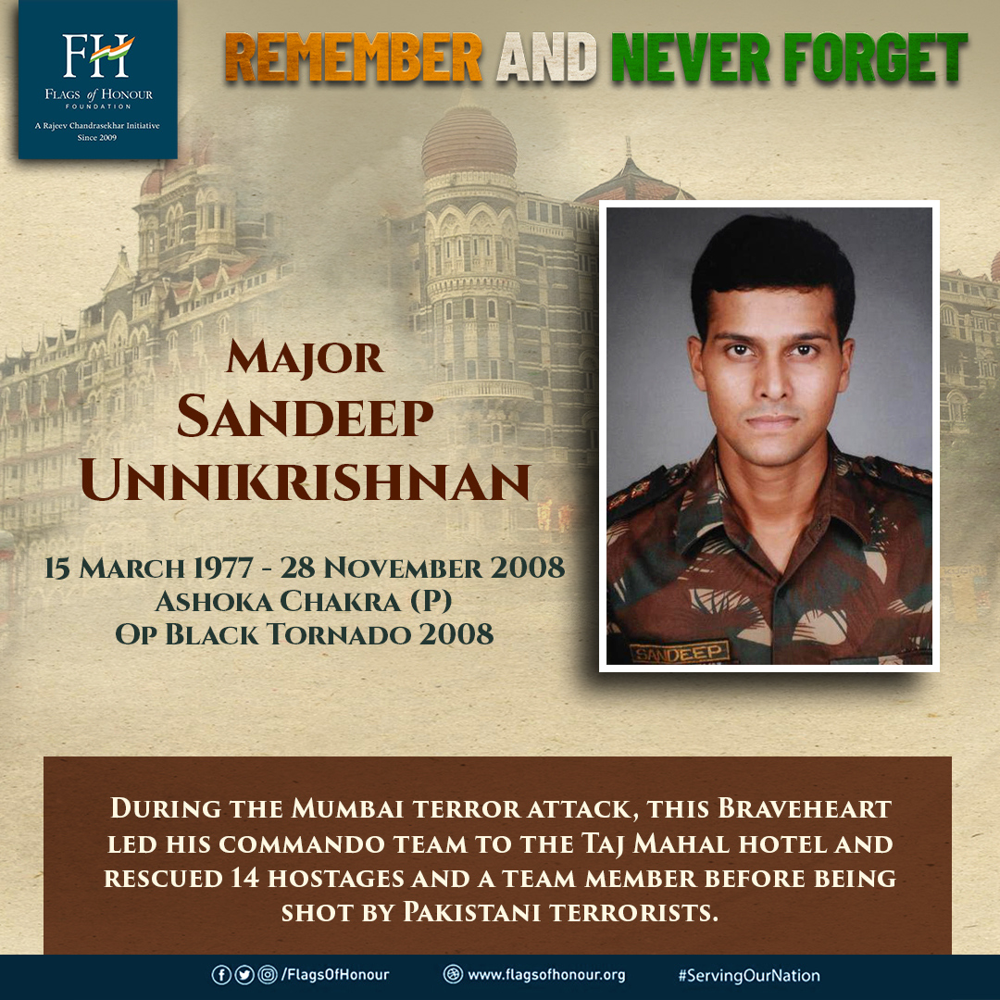

Major Sandeep Unnikrishnan - The Hero of the Taj

Don't come up, I will handle them.
About Hero of 26/11 - Major Sandeep Unnikrishnan
- Sandeep Unnikrishnan came from a Malayali family.
- He was the son of retired ISRO officer K.Unnikrishnan and Dhanalakshmi Unnikrishnan.
- Unnikrishnan joined the National Defence Academy(India) (NDA),Pune, Maharashtra in 1995.
- He was the part of the Oscar Squadron(no.4 Battalion) and graduated of the 94th Course NDA.
- On 12 June 1999, he got gratuated from IAM and got commissioned as Lieutenant in 7th Battalionof the Bihar Regiment(Infantry) of Indian Army.
- Battles/Wars partsipated by him are Operation Vijay, Opeation Parakram, Operation Rakshak, Counter-Insurgency, Operation Black, Tornado.
- Awards he recived are Ashoka Chakra,Operation Parakram Medal, Special Service Medal, Sainya Seva Medal, High Altitude Service Medal, 9 Years Long Service Medal.